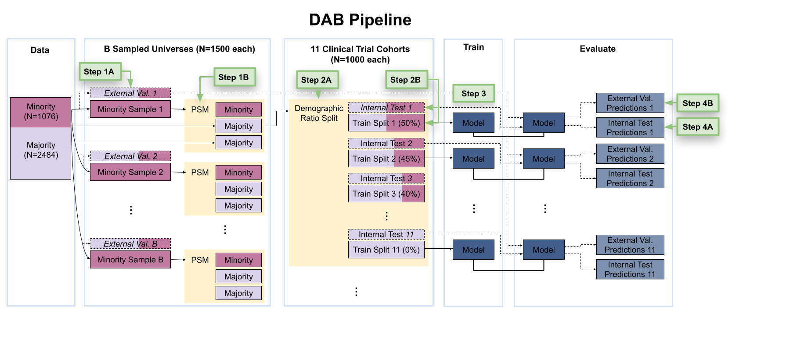

The Detecting Algorithmic Bias (DAB) Pipeline
Overview
The DAB pipeline is a codebase designed to evaluate bias in clinical trial data. It is constructed in a modular way, allowing the user to:
Select an endpoint
Import their own clinical data
Train a model using existing or custom statistical methods
We define algorithmic bias as a disparity in model performance between different demographic groups.
Getting Started
Setting Up the Pipeline
Clone the pipeline repository into Google Colab:
import os
if not os.path.exists("/content/Pipeline"):
!git clone https://github.com/CTN-0094/Pipeline.git
os.chdir("Pipeline")
Install all required packages:
!pip install -r requirements.txt
Running the Pipeline
Run the following command to execute the pipeline with default settings.
!python run_pipelineV2.py --dir "/content/RESULTS"
Sample Console Output:
Elapsed time: 0.000638 seconds
Available outcomes:
1. ctn0094_relapse_event
2. Ab_krupitskyA_2011
3. Ab_ling_1998
4. Rs_johnson_1992
5. Rs_krupitsky_2004
6. Rd_kostenB_1993
Select an outcome by entering its number: 1
If you are prompted to install MatchIt or optmatch, select “1” (Yes).
MatchIt installed successfully.
✖ Would you like to install optmatch?
1: Yes
2: No
Selection: 1
You have successfully run the pipeline! 🎉
Viewing the Results
On the left sidebar of Google Colab, click the Files tab
Open the RESULTS directory
Inside, go to the evaluations folder
Open the most recent .csv file
Each row = a demographic ratio split
Rightmost columns = evaluation metrics
Understanding the Pipeline
The pipeline uses the CTN-0094 dataset to model opioid use disorder outcomes. These outcomes are derived from urine drug screening data across multiple weeks.
Outcomes
ctn0094_relapse_event — Any positive UDS
Ab_krupitskyA_2011 — Confirmed abstinence (weeks 5–24)
Ab_ling_1998 — Maintained 13 consecutive negative UDS (1 month)
Rs_johnson_1992 — 2 consecutive positive UDS after 4-week treatment
Rs_krupitsky_2004 — 3 consecutive positive UDS = relapse
Rd_kostenB_1993 — 3 weeks of consecutive negative UDS
More info: https://ctn-0094.github.io/CTNote/
Pipeline Diagram
{kind=link}
How the Pipeline Works
Step 1: Hold out m validation samples and draw n “minority” + 2n matched “majority” samples.
Step 2: Form trial cohorts of 50/50 splits, then train/test on that and validate on held-out m.
Step 3: Train the specified model.
Step 4: Measure performance on test and validation samples.
Interpretation
If model accuracy does not change across demographic compositions:
✅ Outcome is measurement invariant
If model accuracy does change across demographics:
❌ Outcome is measurement variant
Reference: Odom et al., 2025
Customizing the Pipeline
The DAB pipeline is modular. You can swap out:
Models
Datasets
Outcome definitions
However, user-defined dataset integration is not yet automated.